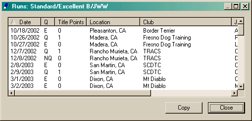

This dialog is used to display several different styles of lists. Most of these lists are shown as details for various items in the Points view. In addition, this dialog is used to show runs that may be changed due to configuration changes and also for items matched when searching notes.
